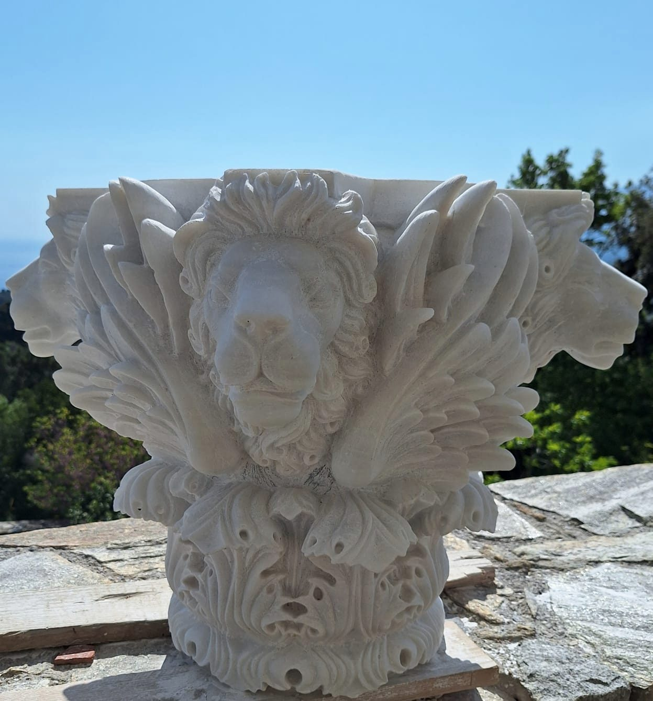
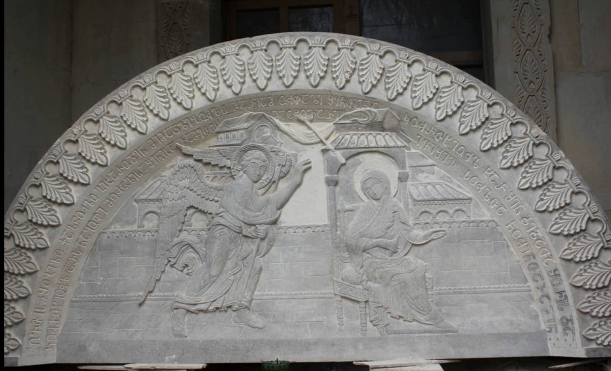
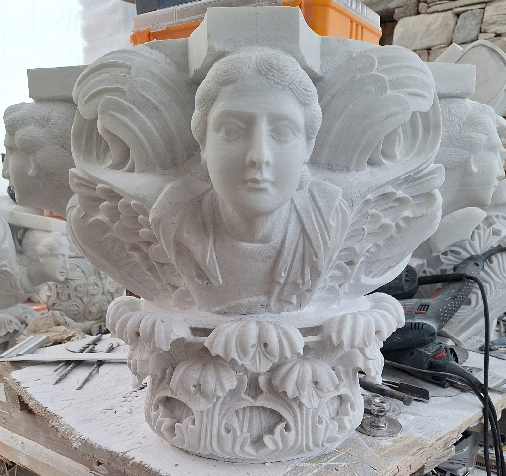

Marble · Stone · Sacred art
Sculpting eternity in stone.
Iraklis is a sculptor working from Mount Athos. For decades he has carved iconostases, capitals and reliefs for churches and private clients in Greece, Russia, Georgia and the United States.
Nº 02Capital of the Four Evangelists — marble, Mount Athos

The work
Capitals for a monastery on Mount Athos. An iconostasis in Moscow. Churches in Georgia, facades in New York. For decades, Iraklis has carved stone for places that are meant to endure.
Discover the worksSelected works
All fourteen series
Sacred art
Icons in marble and gold leaf
Archangels and saints carved on Mount Athos in white marble — some left bare, some finished in gold and silver leaf, in the tradition of Byzantine icons.

The practice
Drawn first, carved by hand.
- I
Marble sculpture
Figures, bas-reliefs and monumental work, carved by hand in marble and stone.
- II
Sacred art
Iconostases, holy tables, carved capitals and icons for churches and monasteries.
- III
Bespoke design
Each commission is developed from sketches to 3D models before the carving begins.
- IV
Restoration & detail
Careful restoration and fine ornamental detail for exterior and interior stonework.


The artist
Classical in spirit, modern in feeling.
Iraklis is a master sculptor with decades of experience transforming marble into works that feel both classical and modern. His sculptures explore mythology, human emotion and nature — from intimate bas-reliefs to monumental figures.
Much of his work is made for sacred spaces: iconostases, holy tables, carved capitals and icons for monasteries and churches.
- Mount Athos, GreeceCapitals · reliefs · 2023–2025
- Moscow, RussiaIconostasis · holy table
- GeorgiaChurches · stone · 2008–2019
- New York, USAExterior stone · 2008–2009